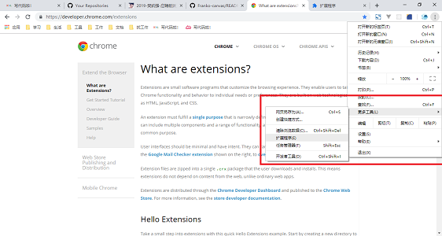
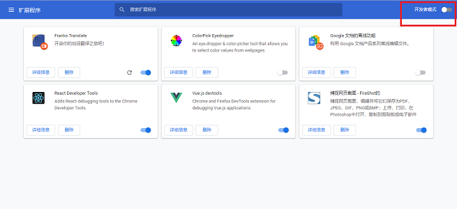
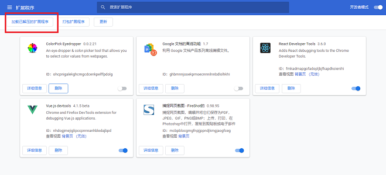
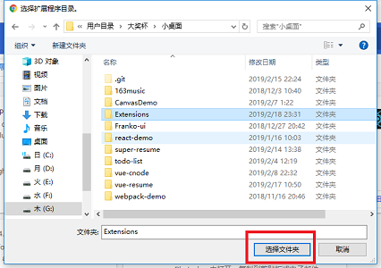
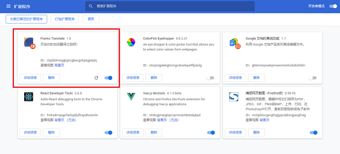

【总结】Chrome 划词翻译插件
过年阶段终于结束了，真没想到过年期间我是真的做不了什么事。简历我就弄了好多天，更别说项目和博客了。这几天正在集中火力弄项目，博客基本没写，恐怕也已经没时间写了。
今天这篇是 Chrome 插件的一个项目总结，虽然没什么时间，但是还是得经历把每一个项目都搞好吧。
Franko Translate - 开启你的划词翻译之旅吧！（点我下载）
Franko Translate
一、项目介绍
此项目是一款的划词翻译插件，需要安装在 Chrome 浏览器上。安装此插件后，用户使用鼠标高亮页面中的文字，就可以将对应内容翻译为指定语言了。借助这款插件，在浏览网页时就可以很方便地翻译一些需要的内容。
以前从来没有试着去开发过一个 Chrome 浏览器的拓展程序，因此这也算是我的插件开发初学项目。虽然内容简单，但也基本覆盖到了插件开发的一些重要内容，而且就功能上来说目前并没有出现什么问题。使用到的技术包括：
- Chrome Extensions、ES6、HTML(5)、CSS(3)
由于这款插件并没有发布到 Chrome 应用商店上，所以并不能直接安装。因此如果想要体验这款插件，就要经历这几个步骤：
- 打开导航栏中「自定义及控制」按钮，找到如图所示的「拓展程序」模块：
- 进入「拓展程序」后，开启开发者模式：
- 开启开发者模式后，导航栏下方就会显示「加载已解压的拓展程序」。这时先下载这款划词翻译插件的压缩包（点我下载），然后解压。
- 解压插件压缩包后，点开「加载已解压的拓展程序」，找到刚才解压的文件夹，点击「选择文件夹」：
- 然后就可以在拓展程序列表中看到插件，开启你的划词翻译之旅吧！
二、使用划词翻译插件
在使用这款划词翻译前，需要在插件导航栏处打开翻译开关。如果需要暂停使用划词翻译的功能，也可以在这里将开关关闭：
然后就可以通过使用鼠标高亮页面中的文字，将对应内容进行翻译了。翻译的内容会以一个浮层的形式出现在页面上，如图所示，因为浮层的大小有限，通过这种方法只能可以帮助翻译一段并不太长的文字：
如果要翻译很长的一段话，这时可以通过鼠标右击高亮区域，召出菜单选项，点击「翻译」选项就可以进入谷歌翻译的对应页面进行翻译了：
除此之外，划词翻译插件还支持多种语言的翻译。可以在设置中设置语言，然后就可以对应的翻译效果了：
三、总结
虽然这个插件功能和内容都很简单，而且在技术上也没有什么炫酷的操作，这里主要需要注意的是整个 Chrome 插件项目的文件结构与配置，以及每个文件在这个插件中起到了什么样的作用。来分析一下 manifest.json，这是整个插件项目的配置文件：
{
"name": "Franko Translate", // 插件名
"version": "1.0", // 版本号
"description": "开启你的划词翻译之旅吧！", // 介绍
"manifest_version": 2, // 配置的版本
"permissions": [ // 依赖
"activeTab",
"storage",
"contextMenus",
"tabs"
],
"background": { // 插件后台代码
"scripts": ["background.js"],
"persistent": false
},
"content_scripts": [ // 插件内容与样式
{
"matches": [
"<all_urls>" // 所以地址下均显示插件内容
],
"css": [
"contentScript.css"
],
"js": [
"contentScript.js"
]
}
],
"browser_action": { // 浏览器行为
"default_title": "Franko Translate", // 导航栏的标题
"default_popup": "popup.html" // 导航栏浮层代码
},
"options_page": "options.html", // 设置页代码，这次的项目中没有用到
"icons": { // 各种大小下的 icon 文件
"16": "images/get_started16.png",
"32": "images/get_started32.png",
"48": "images/get_started48.png",
"128": "images/get_started128.png"
}
}
2
3
4
5
6
7
8
9
10
11
12
13
14
15
16
17
18
19
20
21
22
23
24
25
26
27
28
29
30
31
32
33
34
35
36
37
38
39
40
上面就是这个项目所有的文件配置的相关内容。除此之外，几种 window.chrome 的 API 的使用也很重要。比如 chrome.runtime.onMessage.addListener 可以用以监听插件向页面发送消息，chrome.storage.sync.get 与 chrome.storage.sync.set 分别用于从 storage 中获取与设置值。要想做好一个 Chrome 插件，弄清楚这些是必不可少的，关键时候还是得去查文档，插件开发文档地址：https://developer.chrome.com/extensions。